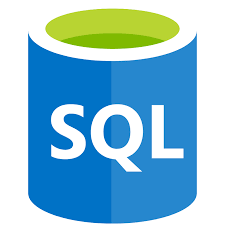
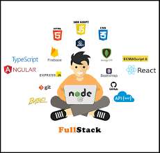

| Course name |
program |
 |
Java has been one of the most popular programming language for many years.
Java is Object Oriented. However it is not considered as pure object oriented as it provides support for primitive data types (like int, char, etc)
The Java codes are first compiled into byte code (machine independent code). Then the byte code is run on Java Virtual Machine (JVM) regardless of the underlying architecture.
|
|  |
SQL is Structured Query Language, which is a computer language for storing, manipulating and retrieving data stored in a relational database.
SQL is the standard language for Relational Database System. All the Relational Database Management Systems (RDMS) like MySQL, MS Access, Oracle, Sybase, Informix, Postgres and SQL Server use SQL as their standard database language.
|
|  |
The methods by which computers communicate with each other through the use of markup languages and multimedia packages is known as web technology. In the past few decades, web technology has undergone a dramatic transition, from a few marked up web pages to the ability to do very specific work on a network without interruption |